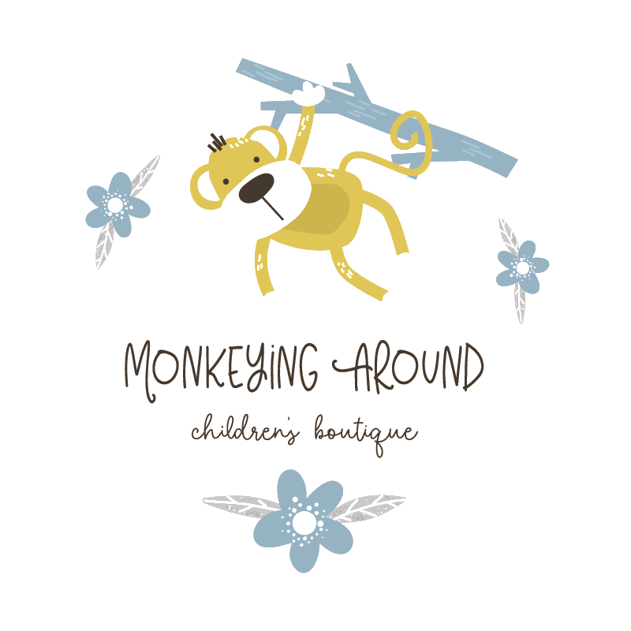

Architect

THE LATEST NEWS ON DESIGN & ARCHITECTURE
Architect
THE LATEST NEWS ON DESIGN & ARCHITECTURE
MOST POPULAR POSTS

Vanglo House By LWPAC in Canada

Sunrise Expanse Hotel in USA

Stargaze Resort & Spa in USA

Royal Blossom Hotel & Spa in USA

Sunset Shack Hotel in Spain

Glorious Expanse Hotel in France
OUR MOST POPULAR CLIENTS


TOP RATED


HOT NEWS

Amazing Gabion Ideas for Outdoors A Gabion is a cage box or cylinder filled with rocks, concrete, or sometimes sand and soil and It is a great way to decorate your outdoor. Amazing Gabion Ideas for Outdoors A Gabion is a cage box or cylinder filled with rocks, concrete, or sometimes sand and soil and It is a great way to decorate your outdoor
Nebula Hotel in Spain

Amazing Gabion Ideas for Outdoors A Gabion is a cage box or cylinder filled with rocks, concrete, or sometimes sand and soil and It is a great way to decorate your outdoor. Amazing Gabion Ideas for Outdoors A Gabion is a cage box or cylinder filled with rocks, concrete, or sometimes sand and soil and It is a great way to decorate your outdoor

Amazing Gabion Ideas for Outdoors A Gabion is a cage box or cylinder filled with rocks, concrete, or sometimes sand and soil and It is a great way to decorate your outdoor. Amazing Gabion Ideas for Outdoors A Gabion is a cage box or cylinder filled with rocks, concrete, or sometimes sand and soil and It is a great way to decorate your outdoor

Amazing Gabion Ideas for Outdoors A Gabion is a cage box or cylinder filled with rocks, concrete, or sometimes sand and soil and It is a great way to decorate your outdoor. Amazing Gabion Ideas for Outdoors A Gabion is a cage box or cylinder filled with rocks, concrete, or sometimes sand and soil and It is a great way to decorate your outdoor

Amazing Gabion Ideas for Outdoors A Gabion is a cage box or cylinder filled with rocks, concrete, or sometimes sand and soil and It is a great way to decorate your outdoor. Amazing Gabion Ideas for Outdoors A Gabion is a cage box or cylinder filled with rocks, concrete, or sometimes sand and soil and It is a great way to decorate your outdoor


Amazing Gabion Ideas for Outdoors A Gabion is a cage box or cylinder filled with rocks, concrete, or sometimes sand and soil and It is a great way to decorate your outdoor. Amazing Gabion Ideas for Outdoors A Gabion is a cage box or cylinder filled with rocks, concrete, or sometimes sand and soil and It is a great way to decorate your outdoor